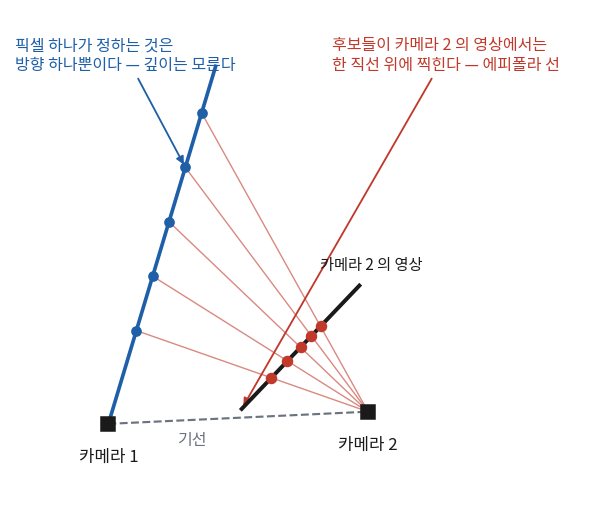
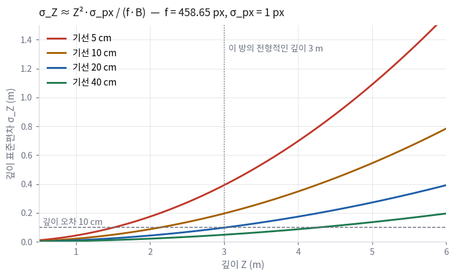
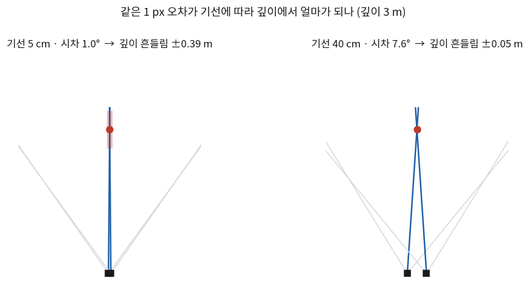

4회 ①절에서 이렇게 적었다 — 투영은 깊이를 잃는다.
\(\mathbf{p}_C = Z K^{-1}\tilde{\mathbf{u}}\)에서 \(Z\)를 모르기 때문이다.
오늘은 영상을 한 장 더 가져온다. 그러면 무엇이 풀리고 무엇이 안 풀리는지가 오늘의 내용이다.
결론을 미리 말하면 거의 다 풀리고 하나가 안 풀린다.
그리고 그 하나가 이 강의에 IMU가 들어오는 이유다.
한 장 요약 — 영상 두 장으로 알 수 있는 것과 없는 것 학기 내내 본다
무엇
알 수 있나
왜
두 카메라의 상대 회전 \(R\)
안다
대응점 다섯 쌍이면 결정된다 (③절)
두 카메라의 이동 방향 \(\mathbf{t}/\lVert\mathbf{t}\rVert\)
안다
같이 나온다
두 카메라 사이 거리 \(\lVert\mathbf{t}\rVert\)
모른다
⑤절. 영상만으로는 원리적으로 불가능하다
3차원 점의 모양 (점들의 상대 배치)
안다
⑥절 삼각측량
3차원 점까지의 실제 거리
모른다
위와 같은 이유. 모양은 맞고 배율만 모른다
모양이 얼마나 정확한가
계산할 수 있다
⑦절. 기선이 짧으면 크게 흔들린다
제자리에서 돌기만 했을 때
아무것도 못 한다
⑧절. 삼각측량이 원리적으로 불가능하다
해석: 「모른다」가 세 줄인데 위의 둘은 같은 하나다.
거리를 모르니 점까지의 거리도 모른다. 배율 하나가 통째로 빠져 있는 상태이고,
이것을 스케일 모호성이라고 한다.
마지막 줄은 성격이 다르다 — 배율이 아니라 아예 풀 수 없는 상황이고,
실제 데이터에서 실제로 자주 생긴다.
① 대응점 하나가 주는 제약
첫 영상의 픽셀 하나는 방향 하나를 정한다(4회 역투영).
그 방향 위 어디에 점이 있는지는 모른다. 그런데 두 번째 카메라의 위치를 안다면,
그 광선 위의 후보들이 두 번째 영상에서 어디에 찍힐지는 계산할 수 있다.

깊이 후보들이 두 번째 영상에서 한 직선 위에 찍힌다.
이 직선을 에피폴라 선이라고 한다. 대응점을 온 영상에서 찾을 필요가 없어진다는 뜻이고,
7회 매칭이 실제로 이 성질을 쓴다.
제약을 유도한다 — 세 벡터가 한 평면에 있다
유도의 뼈대는 한 줄이다 — 「두 광선과 기선이 한 평면 위에 있다」는 사실을 식으로 쓰는 것이다.
두 카메라 좌표계 사이의 관계를 \((R, \mathbf{t})\)라 하자.
카메라 1의 좌표를 카메라 2의 좌표로 옮기는 변환이다.
🆕 유도에 쓰는 기호 둘 — 무엇이고 크기가 얼마인가
\(\mathbf{x}_1, \mathbf{x}_2\) — 3×1 벡터. 정규화 좌표의 동차 형태
4회의 정규화 좌표 \((x, y) = (X/Z,\, Y/Z)\)는 숫자 둘이었다.
오늘은 그 뒤에 1을 붙여 숫자 셋으로 쓴다 — \(\mathbf{x} = (x,\, y,\, 1)^\top\).
행렬을 곱할 수 있게 하려는 것이고, 동차좌표라 전체에 상수를 곱해도 같은 방향이다(2회 ⑤절).
같은 말이 4회와 크기가 다르다는 것을 짚어 두고 간다.
\(\lambda_1, \lambda_2\) — 스칼라. 각 카메라에서 본 그 점의 깊이
\(\mathbf{x}\)는 방향만 남은 상태이므로, 실제 3차원 점은 그 방향에 깊이를 곱한
\(\lambda\mathbf{x}\)다. \(\lambda\)가 곧 4회의 \(Z\)이고 양수다(cheirality).
오늘 유도의 목표는 이 둘을 식에서 없애는 것이다 — 모르는 값이기 때문이다.
같은 3차원 점이므로, 카메라 1에서 본 좌표 \(\lambda_1\mathbf{x}_1\)을 카메라 2로 옮기면
카메라 2에서 본 좌표 \(\lambda_2\mathbf{x}_2\)가 된다. 출발식은 이 한 줄이 전부다.
마지막으로 외적을 행렬 곱으로 바꿔 쓴다.
\(\mathbf{t}\times\mathbf{a} = [\mathbf{t}]_\times\mathbf{a}\)이고
\([\mathbf{t}]_\times\)는 3×3 반대칭 행렬이다(2회 ①절 · 3회에서 계속 썼다).
그러면 \(\mathbf{x}_1\)과 \(\mathbf{x}_2\) 사이에 3×3 행렬 하나가 끼워진 모양이 된다.
이 3×3 행렬에 이름을 붙인 것이 Essential 행렬 \(E\)다.
\(\lambda_1, \lambda_2\)가 식에서 사라졌다는 것이 이 유도의 핵심이다 —
깊이를 몰라도 성립하는 제약이 남았다.
$$
\boxed{\;\mathbf{x}_2^\top E\,\mathbf{x}_1 = 0,
\qquad E = [\mathbf{t}]_\times R \in \mathbb{R}^{3\times3}\;}
$$
🆕 이 절에서 처음 나오는 이름 — 크기까지 적어 둔다
에피폴라 선 (epipolar line) \(\boldsymbol\ell_2\) — 3×1 벡터.
3차원 직선이 아니라 영상 위의 2차원 직선이다
제약식 \(\mathbf{x}_2^\top\big(E\mathbf{x}_1\big) = 0\)에서 \(E\mathbf{x}_1\)을 하나로 묶어
\(\boldsymbol\ell_2 = E\mathbf{x}_1 \in \mathbb{R}^{3}\)이라고 쓴다.
이 세 숫자는 점의 좌표가 아니다.
영상 2의 정규화 좌표 평면에 그려지는 직선 \(ax + by + c = 0\)의 계수 셋이고,
\(\boldsymbol\ell = (a,\, b,\, c)^\top\)로 모아 쓴 것이다.
점의 동차좌표와 같은 성질을 갖는다 — 전체에 상수를 곱해도 같은 직선이다.
그래서 「점이 그 직선 위에 있다」가 내적 하나로 적힌다 —
\(\boldsymbol\ell^\top\mathbf{x} = ax + by + c = 0\)이다.
제약식을 이렇게 묶어 읽으면 「\(\mathbf{x}_2\)가 직선 \(\boldsymbol\ell_2\) 위에 있다」는 뜻이 된다.
반대로 묶으면 영상 1에서의 에피폴라 선이 나온다 — \(\boldsymbol\ell_1 = E^\top\mathbf{x}_2\).
그럼 3차원 직선은 어디 갔나. 영상 1의 픽셀 하나가 정하는 3차원 광선은
위 그림에 그려진 그것이고, \(\boldsymbol\ell_2\)는 그 광선을 영상 2에 투영한 결과다.
3차원 직선은 애초에 숫자 셋으로 적을 수 없다 — 자유도가 4다.
여기서는 「대응점이 있을 수 있는 자리」를 2차원에서 1차원으로 줄이는 데 썼다.
에피폴 (epipole) \(\mathbf{e}_1, \mathbf{e}_2\) — 3×1 동차좌표 점
기선이 영상과 만나는 점. 달리 말하면 한 카메라의 중심이 다른 영상에 찍히는 자리이고,
모든 에피폴라 선이 여기서 만난다.
영상 2의 에피폴 \(\mathbf{e}_2\)는 어떤 \(\mathbf{x}_1\)에 대해서도
\(\boldsymbol\ell_2^\top\mathbf{e}_2 = (E\mathbf{x}_1)^\top\mathbf{e}_2 = \mathbf{x}_1^\top E^\top\mathbf{e}_2 = 0\)
이어야 하므로 \(E^\top\mathbf{e}_2 = \mathbf{0}\)을 만족한다.
같은 이유로 영상 1 쪽은 \(E\mathbf{e}_1 = \mathbf{0}\)이다.
카메라 1의 중심을 카메라 2에서 보면 좌표가 \(\mathbf{t}\)이므로 \(\mathbf{e}_2 \sim \mathbf{t}\)이고,
②절과 ④절이 이 사실을 그대로 쓴다.카메라가 정면으로 다가가면 \(\mathbf{t}\)가 광축 방향이라 에피폴이 영상 한가운데에 온다.
\(E\) — Essential 행렬 · \(F\) — Fundamental 행렬. 둘 다 3×3
\(E\)는 정규화 좌표에서의 제약(카메라 내부 파라미터를 이미 안다),
\(F\)는 픽셀 좌표에서의 제약이다.
픽셀 쪽 제약을 \(\tilde{\mathbf{u}}_2^\top F\,\tilde{\mathbf{u}}_1 = 0\)으로 쓰고
\(\tilde{\mathbf{u}} = K\mathbf{x}\)를 넣어 보면 둘의 관계가 바로 떨어진다 —
\(\mathbf{x}_2^\top K^\top F K\,\mathbf{x}_1 = 0\)이므로 \(E = K^\top F K\)이고,
뒤집으면 \(F = K^{-\top}EK^{-1}\)이다.
우리는 \(K\)를 알고 있으므로 \(E\)만 쓴다.
기선 (baseline) \(B = \lVert\mathbf{t}\rVert\) — 스칼라
두 카메라 중심을 잇는 선, 또는 그 길이.
⑦절 전체가 이 길이에 관한 이야기다.
② E와 F의 성질 — 자유도 5가 오늘의 핵심 숫자
성질
\(E\) (정규화 좌표)
\(F\) (픽셀 좌표)
크기
3×3
3×3
자유도
5 — 회전 3 + 이동 방향 2
7 — 내부 파라미터를 모르므로 둘 더
랭크
2 (\(\det E = 0\))
2 (\(\det F = 0\))
특이값
\((\sigma, \sigma, 0)\) — 앞 둘이 같다
제약 없음
필요한 대응점
5쌍 (또는 선형으로 8쌍)
7쌍 (또는 8쌍)
언제 쓰나
캘리브레이션을 안다 — 우리 경우
모르는 카메라, 인터넷 사진
왜 특이값 둘이 같고 하나가 0인가 — \(E\)의 정의에서 바로 나온다
위 표의 「랭크 2」와 「특이값 \((\sigma, \sigma, 0)\)」은 외워 둘 사실이 아니다.
\(E = [\mathbf{t}]_\times R\)에 \(EE^\top\)을 계산해 보면 셋 다 떨어져 나온다.
\(R\)이 직교행렬이라 \(RR^\top = I\)로 회전이 통째로 사라지는 것이 출발점이다.
마지막 등호는 반대칭 행렬의 성질 \([\mathbf{t}]_\times^\top = -[\mathbf{t}]_\times\)다(2회 ①절).
여기에 항등식 하나를 넣으면 \(\mathbf{t}\)만으로 적힌다.
3회에서는 길이 1인 축에 대해 \([\mathbf{u}]_\times^2 = \mathbf{u}\mathbf{u}^\top - I\)로 썼는데,
길이가 \(\lVert\mathbf{t}\rVert\)면 양쪽이 그 제곱만큼 커진다.
$$
[\mathbf{t}]_\times^2 = \mathbf{t}\mathbf{t}^\top - \lVert\mathbf{t}\rVert^2 I
\qquad\Longrightarrow\qquad
EE^\top = \lVert\mathbf{t}\rVert^2 I - \mathbf{t}\mathbf{t}^\top
$$
이 3×3 행렬을 두 방향에 먹여 본다 — \(\mathbf{t}\) 방향과, \(\mathbf{t}\)에 수직인 방향이다.
\(\mathbf{t}^\top\mathbf{t} = \lVert\mathbf{t}\rVert^2\)인 것만 쓰면 되고,
결과가 \(EE^\top\mathbf{v} = \mu\,\mathbf{v}\) 꼴로 나오는지를 본다.
그 꼴이면 \(\mu\)가 고윳값이다.
특이값이 \((\sigma, \sigma, 0)\)인 것을 실제로 확인해 보면 이렇다.
vision-slam/src/epipolar_numbers.py가 계산한 값이다.
특이값 = [0.207123 0.207123 0.] ← 앞 둘이 같고 셋째가 0
‖t‖ = 0.207123 ← 특이값이 기선 길이와 같다
det E = 3.360e-20 ← 랭크가 2다
x2ᵀ E x1 = -1.735e-18 ← 정답 대응점에서 0이다
해석:「자유도 5, 숫자 9개」가 오늘의 구조다.
9개를 자유롭게 풀면 \(E\)가 아닌 행렬이 나오고, 그래서 푼 뒤에 제약을 다시 걸어야 한다(③절).
3회의 회전행렬과 똑같은 상황이다 — 자유도보다 숫자가 많고, 남는 것은 제약이다.
특이값 앞 둘이 같다는 것이 그 제약을 거는 실용적인 방법이 된다.
⚠️ \(\mathbf{x}_1\)과 \(\mathbf{x}_2\) 중 어느 쪽이 왼쪽에 오나
\(\mathbf{x}_2^\top E\mathbf{x}_1 = 0\)과 \(\mathbf{x}_1^\top E\mathbf{x}_2 = 0\)은
같은 식이 아니다 — 뒤쪽은 \(E^\top\)을 쓴 것과 같다.
그리고 \((R, \mathbf{t})\)가 「1에서 2로」인지 「2에서 1로」인지에 따라서도 달라진다.
OpenCV의 recoverPose가 무엇을 돌려주는지 문서에서 확인하고 주석에 적는다.
이 자리를 틀리면 궤적이 정확히 역방향으로 나온다 — 발산하지 않는다.
③ \(E\)를 푸는 법 맡긴다
8점 알고리즘 — 선형이라 간단하다
제약식 \(\mathbf{x}_2^\top E\mathbf{x}_1 = 0\)은 \(E\)의 아홉 성분에 대해 선형이다.
성분으로 한 번 펼쳐 보면 그것이 보인다. 기호를 이렇게 둔다.
그러면 \(E\)의 아홉 성분을 행 순서로 편 9×1 벡터
\(\operatorname{vec}(E) = (e_{11},\, e_{12},\, e_{13},\, e_{21},\, \ldots,\, e_{33})^\top\)과
1×9 행벡터 하나의 내적으로 적힌다.
대응점 한 쌍이 방정식 하나를 준다.
\(V_A\)가 직교행렬이므로 \(\operatorname{vec}(E) = V_A\mathbf{y}\)로 갈아 쓸 수 있고,
이때 \(\lVert\mathbf{y}\rVert = \lVert\operatorname{vec}(E)\rVert = 1\)이다.
\(U_A\)도 직교행렬이라 곱해도 길이를 바꾸지 않으므로 통째로 사라진다.
합에 \(y_9\)가 없다. \(\Sigma_A\)가 8×9라 아홉째 열이 통째로 0이기 때문이다.
그러니 \(\mathbf{y} = (0,\ldots,0,1)^\top\)으로 두면 값이 정확히 0이 되고, 그것이 최소다.
\(\operatorname{vec}(E) = V_A\mathbf{y}\)에 넣으면 답이 나온다.
$$
\boxed{\;\operatorname{vec}(E) = V_A\text{ 의 마지막(아홉째) 열}\;}
$$
\(U_A\)가 아니라 \(V_A\)의 열이고, 첫 열이 아니라 마지막 열이다.
「\(A\)의 최소 특이벡터」라는 말이 가리키는 것이 이것 —
가장 작은 특이값에 딸린 오른쪽 특이벡터다.
대응점이 아홉 쌍 이상이고 잡음이 섞이면 \(\sigma_9\)가 0이 아니게 되는데,
위 계산에서 가장 작은 \(\sigma\)에 모든 무게를 싣는 것이 최소였으므로
그때도 답은 같은 마지막 열이다.
⚠️ 라이브러리가 \(V_A\)를 주는지 \(V_A^\top\)을 주는지 다르다
numpy.linalg.svd는 \(V_A\)가 아니라 \(V_A^\top\)을 돌려준다.
그래서 파이썬에서는 Vt[-1], 즉 마지막 행이 답이다.
Eigen의 JacobiSVD는 \(V_A\)를 돌려주므로 마지막 열이다.
행과 열을 헷갈려도 길이가 1인 벡터가 나와서 에러가 나지 않는다 —
결과만 엉뚱해진다.
아홉 성분을 자유롭게 풀었으므로 나온 3×3 행렬은 \(E\)의 조건을 만족하지 않는다 —
②절에서 본 「특이값 앞 둘이 같고 셋째가 0」이 아니다.
그래서 한 번 더 SVD를 해서 특이값을 눌러 준다.
쪼갠 뒤 가운데만 갈아 끼우는 것이 전부다.
\(U_E, V_E\)는 그대로 두고 특이값만 바꾼다.
이렇게 얻은 것이 \(E\)의 조건을 만족하는 행렬 중 원래 행렬에 가장 가까운 것이다.
⚠️ 좌표를 그대로 넣으면 안 된다 — Hartley 정규화
위 행벡터를 보면 \(x_2x_1\) 같은 제곱 항과 상수 1이 섞여 있다.
픽셀 좌표를 그대로 넣으면 \(u \sim 700\)이라 제곱 항은 50만쯤 되고 상수 항은 1이다.
열마다 크기가 20만 배 차이 난다.
\(\lVert A\,\operatorname{vec}(E)\rVert\)를 최소화하는 문제에서
큰 열이 오차를 독점하게 되고, 답이 그 열에만 맞춰진다.
A 행렬 열 크기의 최대/최소
픽셀 좌표 그대로 : 2.08e+05
정규화 좌표 : 1.16e+01 ← 이 정도면 괜찮다
우리는 \(K\)를 알아서 정규화 좌표를 쓰므로 이 문제가 이미 절반은 해결돼 있다.
그래도 남은 절반을 없애는 것이 아래의 Hartley 정규화다.
Hartley 정규화 — 어떤 식으로 옮기고, 푼 뒤에 어떻게 되돌리나
하는 일은 「평균을 0으로 옮기고, 원점에서의 평균 거리를 \(\sqrt2\)로 키운다」 두 줄이다.
\(\sqrt2\)인 이유는 2차원 점의 각 좌표가 평균 1쯤이 되게 하려는 것이다 —
그러면 동차좌표의 마지막 성분 1과 크기가 맞는다.
영상 1과 영상 2를 따로 정규화하므로 변환이 둘 나온다.
영상 \(i\)의 대응점을 \(\mathbf{x}_i^{(1)}, \ldots, \mathbf{x}_i^{(n)}\)이라 하고,
먼저 중심과 평균 거리를 잰다. 둘 다 2차원 부분만 쓴다.
곱해 보면 \(\hat{x} = s_i(x - \bar{x}_i)\)이므로 중심이 0이고 평균 거리가 \(\sqrt2\)다.
마지막 행이 \((0,0,1)\)이라 동차좌표의 1이 1로 남는다 — 이 점이 중요하다.
정규화해서 푼 행렬은 \(E\)가 아니다 — 되돌려야 한다
이 질문을 꼭 짚어야 한다. 정규화한 좌표로 풀면 나오는 것이 \(E\)인가? 아니다.
8점 알고리즘이 풀어 주는 것은 \(\hat{\mathbf{x}}\) 사이의 제약을 만족하는 행렬
\(\hat{E}\)이고, 그것은 원래 좌표의 \(E\)와 다른 행렬이다.
둘의 관계는 정규화 식을 대입하면 바로 나온다.
원래 좌표에 대한 제약식과 나란히 놓고 보면 가운데 3×3 행렬이 곧 \(E\)다.
푼 뒤에 이 한 줄을 반드시 곱해 되돌린다.
$$
\boxed{\;E = T_2^\top\,\hat{E}\,T_1\;}
$$
해석:「정규화해도 같은 \(E\)가 나오나」의 답은 절반만 「그렇다」다.
잡음이 없으면 해가 유일하므로 되돌린 \(E\)가 원래 \(E\)와 (배율을 빼고) 같다.
잡음이 있으면 다르다 — 정규화된 좌표에서 최소화한 대수적 오차는
원래 좌표에서 최소화한 것과 다른 양이기 때문이다.
그리고 그 「다름」이 정규화를 하는 이유다.
열 크기가 고른 쪽에서 푼 답이 수치적으로 훨씬 덜 흔들린다.
⚠️ 특이값 제약은 되돌린 뒤에 건다
\(T_i\)는 직교행렬이 아니다. 그래서 \(\hat{E}\)의 특이값을 \((1,1,0)\)으로 눌러 놓아도
\(T_2^\top\hat{E}T_1\)을 하면 앞 둘이 다시 달라진다.
랭크 2는 유지된다(\(\det E = \det T_2 \cdot \det\hat{E} \cdot \det T_1 = 0\))지만
「앞 둘이 같다」는 유지되지 않는다.
그래서 순서가 정규화 → 풀기 → 되돌리기 → 특이값 제약이다.
\(F\)를 푸는 책들은 랭크 2만 요구하므로 되돌리기 전에 걸지만,
\(E\)는 조건이 하나 더 있어 순서가 다르다.
5점 알고리즘 — 제약을 다 쓴다
자유도가 5이므로 다섯 쌍이면 충분하다.
다만 \(\det E = 0\)과 특이값 조건까지 넣으면 방정식이 비선형이 되고,
10차 다항식을 푸는 문제가 된다(Nistér, 2004). 구현이 훨씬 복잡하다.
그런데도 실전에서 5점을 쓴다. 이유는 다음 절에 있다.
RANSAC — 왜 뽑는 점이 적을수록 유리한가
실제 데이터에는 잘못 짝지어진 대응점이 섞여 있다(7회).
그래서 최소 개수만 무작위로 뽑아 풀어 보고, 그 답에 동의하는 점이 가장 많은 것을 고른다.
몇 번을 뽑아야 하는지는 확률로 정해진다.
기호를 셋 둔다 — \(w\)는 인라이어 비율, \(s\)는 한 번에 뽑는 점의 개수,
\(p\)는 원하는 성공 확률이다. 셋 다 스칼라이고 \(w, p\)는 0과 1 사이다.
「성공」은 뽑은 \(s\)개가 전부 인라이어인 것을 말한다.
한 번 뽑아 성공할 확률부터 적는다. 점을 독립으로 뽑는다고 보면 \(w\)를 \(s\)번 곱한 것이다.
$$
P(\text{한 번 성공}) = w^s
$$
그러면 한 번이 실패할 확률은 \(1 - w^s\)이고, \(N\)번을 모두 실패할 확률은 그것의 \(N\)제곱이다.
$$
P(N\text{번 모두 실패}) = \big(1 - w^s\big)^N
$$
우리가 원하는 것은 「\(N\)번 중 적어도 한 번 성공」이 \(p\) 이상인 것이다.
$$
1 - \big(1 - w^s\big)^N \;\ge\; p
\qquad\Longleftrightarrow\qquad
\big(1 - w^s\big)^N \;\le\; 1 - p
$$
양변에 로그를 취해 \(N\)을 지수에서 끌어내린다.
\(\log(1 - w^s)\)는 음수이므로 그것으로 나눌 때 부등호가 뒤집힌다 —
이 한 줄이 식의 최종 모양을 정한다.
$$
N = \left\lceil \frac{\log(1-p)}{\log\big(1 - w^s\big)} \right\rceil
$$
\(s\)가 지수에 들어 있다는 것이 아래 표의 전부다.
표는 \(p = 99\,\%\)로 놓고 계산한 값이다
(vision-slam/src/epipolar_numbers.py).
인라이어 비율
5점 (\(s=5\))
8점 (\(s=8\))
배수
80 %
12회
25회
2.2배
60 %
57회
272회
4.8배
50 %
145회
1,177회
8.1배
40 %
447회
7,025회
15.7배
30 %
1,893회
70,188회
37.1배
해석: 이 표가 5점 알고리즘이 구현의 복잡함을 감수할 만한 이유다.
인라이어가 절반일 때 8배, 30 %일 때 37배 차이가 난다.
그리고 실제로 30~50 %가 드물지 않다 — 빠르게 돌거나 조명이 바뀌면 그렇게 된다.
「최소 개수를 줄이는 것」이 알고리즘 설계에서 왜 그렇게 중요한지를 보여 주는 표이기도 하다.
🆕 이 절에서 처음 나오는 이름
RANSAC (RANdom SAmple Consensus)
「최소 개수만 무작위로 뽑아 풀고, 그 답에 동의하는 점을 센다」를 여러 번 반복해
가장 많이 동의받은 답을 고르는 방식.
여기서는 잘못 짝지어진 대응점을 걸러 내는 데 썼다.
인라이어 (inlier) · 아웃라이어 (outlier)
답에 동의하는 점과 안 하는 점. 「동의한다」의 기준은 사람이 정하는 임계값이다 —
보통 에피폴라 선까지의 거리 몇 픽셀.
4회 ②절의 표를 대면 1 px이 깊이 3 m에서 6.5 mm다.
7회에서 이 비율을 계기판으로 계속 본다.
Hartley 정규화
선형 방정식을 풀기 전에 좌표를 평균 0, 평균 거리 \(\sqrt2\)로 맞추는 것.
여기서는 SVD가 큰 항만 보고 답을 정하는 것을 막는 데 썼다.
④ \(E\)에서 자세를 꺼낸다 — 그리고 네 개의 해
②절에서는 \(EE^\top\)을 계산해 \(E\)의 성질을 캐냈다. 여기서는 반대로 간다 —
\(E\)를 SVD로 쪼개서 \(R\)과 \(\mathbf{t}\)를 도로 꺼낸다.
$$
E = U\Sigma V^\top,
\qquad U,\ \Sigma,\ V \in \mathbb{R}^{3\times3},
\qquad \Sigma = \mathrm{diag}(1,\,1,\,0)
$$
특이값을 \((1,1,0)\)으로 적은 것은 ②절에서 본 \((\lVert\mathbf{t}\rVert, \lVert\mathbf{t}\rVert, 0)\)에
\(\lVert\mathbf{t}\rVert = 1\)을 넣은 것이다. 어차피 크기는 모르므로(⑤절) 그렇게 정해 두고 간다.
그리고 \(U, V\)는 둘 다 \(\det = +1\)이 되게 맞춰 둔다.
셋째 특이값이 0이라 \(U\)나 \(V\)의 마지막 열의 부호를 뒤집어도 \(E\)가 그대로이므로,
부호가 어긋나 있으면 그 열만 뒤집으면 된다. 공짜로 얻는 조건이다.
이동 방향은 \(U\)의 마지막 열이다
②절 끝에서 \(E^\top\mathbf{t} = \mathbf{0}\)을 봤다. \(\mathbf{t}\)가 \(E^\top\)의 영벡터라는 것이다.
SVD를 쓰면 그 영벡터가 무엇인지 바로 읽힌다 — \(U\)의 셋째(마지막) 열
\(\mathbf{u}_3 \in \mathbb{R}^{3}\)을 넣어 보면 된다.
\(U^\top\mathbf{u}_3 = (0,0,1)^\top\)인 것은 \(U\)의 열이 서로 직교하는 단위벡터라서고,
\(\Sigma\)의 셋째 성분이 0이라 거기서 통째로 0이 된다.
\(E^\top\)의 영공간은 랭크가 2이므로 1차원이고, 따라서
\(\mathbf{t}\)와 \(\mathbf{u}_3\)은 같은 방향이다.
길이를 1로 정해 뒀으니 남는 것은 부호뿐이다.
부호가 데이터로 정해지지 않는다. ⑤절에서 보듯 \(E\)와 \(-E\)가 같은 제약식을 주기 때문이고,
네 개의 해 중 두 배가 여기서 나온다.
회전도 두 가지가 나온다 — 그 둘을 적는 것이 \(W\)다
남은 것은 \(R\)이다. 이쪽도 후보가 둘이고, 아래 3×3 행렬 \(W\) 하나로 둘을 적을 수 있다.
\(W\)는 \(z\)축을 중심으로 90° 돌리는 회전행렬이다 —
직교행렬이고 \(\det W = 1\)이다. 외울 행렬이 아니라 유도에서 떨어져 나오는 행렬이고,
어디서 나오는지는 아래 접이식에 있다.
여기에 \(R = UW^\top V^\top\)을 곱한다.
\(U^\top U = I\)이고 \(WW^\top = I\)라 가운데가 전부 지워진다.
$$
[\mathbf{t}]_\times R
= U\Sigma W\,U^\top\;U W^\top V^\top
= U\Sigma\,\underbrace{WW^\top}_{I}\,V^\top
= U\Sigma V^\top = E \quad\checkmark
$$
같은 \(\mathbf{t} = +\mathbf{u}_3\)에 다른 회전 \(R = UWV^\top\)을 넣어 본다.
\(W\)가 90° 회전이므로 \(W^2\)은 180° 회전, 즉 \(\mathrm{diag}(-1,-1,1)\)이다.
\(\Sigma\)를 곱하면 셋째 성분이 0이라 \(-\Sigma\)가 된다.
\(E\)가 아니라 \(-E\)가 나왔다. 그런데 제약식의 오른쪽이 0이므로
\(-E\)도 데이터를 똑같이 만족한다(⑤절). 그래서 이 조합도 버릴 수 없다.
\(\mathbf{t} = -\mathbf{u}_3\)인 두 조합은 부호가 한 번 더 뒤집혀 결과가 서로 바뀐다.
\(\mathbf{t}\)
\(R = UW^\top V^\top\)
\(R = UWV^\top\)
\(+\mathbf{u}_3\)
\([\mathbf{t}]_\times R = +E\)
\(-E\)
\(-\mathbf{u}_3\)
\(-E\)
\(+E\)
네 칸이 \(\pm E\)로만 갈리고, 데이터는 그 부호를 구별해 주지 못한다.해가 넷인 이유가 이 표다 — 알고리즘이 부족해서가 아니라
제약식이 「0과 같다」는 데서 나온 것이다.
하나를 고르려면 제약식 밖의 정보가 필요하고, 그것이 ⑥절 끝의 \(Z > 0\) 검사다.
네 후보 중 하나를 고르는 기준은 식 밖에 있다
네 후보 중 어느 것이 실제 자세인가.
답은 4회에 나온 cheirality에 있다 — 그 자세로 삼각측량했을 때
점이 두 카메라 모두의 앞에 생기는 후보가 하나뿐이고,
나머지 셋에서는 점이 카메라 뒤에 생긴다.
그런데 그 판정에는 삼각측량이 먼저 있어야 한다.
삼각측량은 ⑥절에서 세우므로 검사식도 거기서 적는다.
여기서는 「해가 넷이고, 고르는 기준이 제약식 밖에 있다」까지만 남겨 둔다.
그리고 \(\det R = 1\)을 확인해야 한다. SVD의 \(U, V\)는 부호가 정해져 있지 않아서
그대로 곱하면 \(\det R = -1\)인 뒤집기가 나올 수 있다(2회 ③절).
라이브러리는 이 처리를 하지만, 직접 짤 때는 반드시 넣는다.
⑤ 스케일 모호성 — 이 강의의 분기점 사람이 한다
\(E = [\mathbf{t}]_\times R\)에서 \(\mathbf{t}\)를 두 배로 하면 \(E\)도 두 배가 된다.
그런데 제약식은 \(\mathbf{x}_2^\top E \mathbf{x}_1 = 0\)이다. 오른쪽이 0이다.
그래서 \(E\)에 어떤 수를 곱해도 식이 그대로 성립한다.
$$
\mathbf{x}_2^\top (\alpha E)\,\mathbf{x}_1
= \alpha\,\big(\mathbf{x}_2^\top E\,\mathbf{x}_1\big)
= \alpha \cdot 0 = 0
\qquad \text{0 이 아닌 어떤 } \alpha \text{ 에 대해서도}
$$
그래서 \(E\)는 \(\mathbf{t}\)의 방향만 준다. 크기는 못 준다.
수식이 그렇게 생겼다는 것이 전부이고, 더 나은 알고리즘으로 해결될 성질의 것이 아니다.
②절에서 자유도를 6이 아니라 5로 센 것이 바로 이 이유다.
\(\alpha\)에 음수도 들어간다는 것은 따로 짚어 둘 만하다 —
\(E\)와 \(-E\)를 데이터가 구별해 주지 못한다는 뜻이고,
④절에서 해가 넷이던 이유의 절반이 그것이다.
왜 원리적으로 불가능한가 — 생각 실험 하나
방을 두 배로 키우고 카메라도 두 배로 멀리 움직였다고 하자.
모든 점의 3차원 좌표가 두 배가 되고 카메라 위치도 두 배가 된다.
그러면 \(X/Z\)는 그대로다. 찍히는 영상이 완전히 같다.
영상이 같으면 어떤 알고리즘도 둘을 구별할 수 없다.
정보 자체가 영상에 없다.
해석: 1회에서 「카메라만 쓰면 크기를 모른다」고 했던 것의 증명이 이 절이다.
그리고 이것을 깨는 것이 IMU다.
가속도계는 m/s²라는 절대 단위로 잰다.
같은 영상이라도 「두 배 큰 방을 두 배 빠르게」 지나갔다면 가속도가 네 배로 찍힌다.12회 초기화가 하는 일이 정확히 이것 — 영상이 준 모양에 IMU가 준 자를 대는 것이다.
당장은 배율을 하나 정해 두고 간다. 보통 \(\lVert\mathbf{t}\rVert = 1\)로 놓는다.
그러면 지도의 단위가 「첫 두 프레임 사이 거리」가 된다. 미터가 아니다.
이 사실을 잊고 미터인 것처럼 평가하면 ATE가 이유 없이 크게 나온다 —
⑨절 의뢰서의 마지막 증상이 그것이다.
⑥ 삼각측량 — 두 직선의 교점을 찾는다
자세를 알았으면 이제 점의 위치를 구한다.
각 영상의 픽셀은 3차원 방향이 되고(4회 역투영), 카메라 원점에서 그 방향으로 나가는 직선이 된다.
두 직선을 이렇게 적는다 — 모두 월드 좌표계다.
\(\mathbf{o}_i\)는 카메라 \(i\)의 중심(3×1),
\(\mathbf{v}_i\)는 그 픽셀이 정하는 방향(3×1, 길이 1로 맞춰 둔다),
\(\lambda_i\)는 스칼라다.
\(\lambda_i\)는 ①절의 깊이와 같은 자리의 값이고, \(\mathbf{v}_i\)를 단위벡터로 잡았으므로
여기서는 점까지의 거리가 된다.
두 직선이 만나는 점이 답이다. 그런데 3차원에서 두 직선이 실제로 만날 확률은 0이다.
픽셀 좌표에 잡음이 조금만 있어도 어긋난다.
그래서 두 직선에 가장 가까운 점을 찾는 최소제곱 문제로 바꾼다.
\(M^\top M\)이 2×2라서 역행렬을 손으로 적을 수 있다.
\(\mathbf{v}_1, \mathbf{v}_2\)를 단위벡터로 잡아 뒀으므로 대각 성분이 1이 되고,
나머지 자리에는 두 광선이 이루는 각의 코사인만 남는다.
\(c = \mathbf{v}_1^\top\mathbf{v}_2 = \cos\theta\), \(\boldsymbol\Delta = \mathbf{o}_2 - \mathbf{o}_1\)로 줄여 쓴다.
해석:\(1 - c^2\)이 분모에 있다는 것이 이 절에서 가장 중요한 한 줄이다.
\(c = \cos\theta\)이므로 \(1 - c^2 = \sin^2\theta\)이고, \(\theta\)는 두 광선이 벌어진 각,
즉 ⑦절에서 다룰 시차 각도다.
시차가 0으로 가면 분모가 0으로 가고 \(\lambda\)가 폭발한다 —
「\(M^\top M\)이 특이해진다」가 식에서는 이 분모로 보인다.
조건수도 같은 데서 나온다. \(M^\top M\)의 고윳값이 \(1 \pm \lvert c\rvert\)이므로 이렇게 적힌다.
깊이 3 m에서 기선을 바꿔 가며 실제 값을 넣어 보면 이렇다
(vision-slam/src/epipolar_numbers.py).
기선 시차 각도 det(MᵀM) = sin²θ 조건수
2 cm 0.38° 4.44e-05 90,000 ← 연속 두 프레임
5 cm 0.95° 2.78e-04 14,400
20 cm 3.82° 4.43e-03 900
40 cm 7.63° 1.76e-02 225
연속한 두 프레임에서 조건수가 9만이다.
배정밀도 유효숫자가 열여섯 자리쯤이니 계산은 되지만,
입력의 오차가 그만큼 증폭되어 나온다는 뜻이다.
⑦절에서 깊이 오차 1 m를 얻는 것이 이 숫자의 다른 얼굴이다.
방법 ② DLT — 투영식을 그대로 선형화한다
투영식은 \(\tilde{\mathbf{u}} \sim P\tilde{\mathbf{X}}\)다. 동차좌표라 배율이 자유이므로
「\(\tilde{\mathbf{u}}\)와 \(P\tilde{\mathbf{X}}\)가 평행하다」로 쓸 수 있고, 그것은 외적이 0이라는 뜻이다.
⚠️ 나누기 전에 \(\tilde X_4\)를 본다 — 여기가 퇴화 조건이 새어 나오는 구멍이다
\(\tilde X_4 \approx 0\)이면 무한히 먼 점이라는 뜻이다(2회 ⑤절의 「마지막 칸이 0」).
기선이 짧으면 실제로 이 값이 0에 붙는데, 그대로 나누면 좌표가 폭발한다.
\(\lvert\tilde X_4\rvert\)가 나머지 성분에 비해 너무 작으면
점을 만들지 않고 버리는 것이 옳다 — 중점법에서 조건수를 보는 것과 같은 판정이다.
중점법
DLT
무엇을 최소화
3차원에서 두 직선까지의 거리
대수적 오차 (기하적 의미가 약하다)
영상 개수
둘일 때 간단하다
셋 이상으로 바로 늘어난다 — 행이 늘 뿐
구현
2×2 역행렬
4×4 SVD
퇴화 판정
\(M^\top M\)의 조건수를 보면 된다
특이값 비를 본다
해석:둘 다 최적해가 아니다.
우리가 실제로 재는 것은 픽셀인데, 중점법은 3차원 거리를,
DLT는 대수적 양을 최소화한다.
진짜로 재투영 오차를 최소화하려면 비선형 최적화가 필요하고, 그게 9회의 번들조정이다.
여기서는 좋은 초기값을 만드는 것이 목적이므로 어느 쪽이든 된다.
「초기값을 만드는 방법」과 「다듬는 방법」이 다르다는 구조가 이 강의에서 계속 나온다 —
③절의 8점/5점도, 12회의 초기화도 같은 모양이다.
⚠️ \(\mathbf{v}_1\)과 \(\mathbf{v}_2\)가 평행하면 풀 수 없다
\(M^\top M\)이 특이해진다. 두 광선이 평행하다는 것은 두 카메라가 같은 자리에서 봤다는 뜻이고,
실제로 그런 경우가 자주 생긴다 — 제자리에서 회전만 했을 때다(⑧절).
기선이 0이면 삼각측량은 원리적으로 불가능하다.
inverse()가 에러를 내지 않고 거대한 숫자를 돌려주는 것이 이 자리의 위험이다.
조건수를 재서 미리 걸러야 한다.
④절에서 미뤄 둔 것 — 네 개의 해 중 하나를 고른다
④절에서 후보 \((R, \mathbf{t})\)가 넷 나왔고, 고르는 기준이
4회의 cheirality라고만 적어 두고 넘어갔다.
삼각측량이 필요해서 미뤄 둔 것이고, 이제 손에 있으므로 식으로 적을 수 있다.
후보 하나마다 대응점을 삼각측량해 카메라 1 좌표계의 점 \(\mathbf{p}_1 \in \mathbb{R}^{3}\)을 얻고,
그것을 카메라 2로 옮긴다.
$$
\mathbf{p}_2 = R\,\mathbf{p}_1 + \mathbf{t}
$$
「카메라 앞에 있다」는 \(z\) 성분이 양수다라는 뜻이다.
\(z\) 성분을 꺼내는 것은 \(\hat{\mathbf{z}} = (0,0,1)^\top\)과의 내적이므로, 검사가 두 줄로 적힌다.
점 하나로 고르면 그 점이 아웃라이어일 때 해가 통째로 바뀐다.
그래서 인라이어 전부에 위 검사를 돌려 「앞에 있는 점의 개수」를 세고
가장 많은 후보를 고른다.
recoverPose가 이 판정까지 해 주지만,
개수를 직접 찍어 보는 것이 좋은 검사가 된다 —
제대로 된 해에서는 인라이어의 거의 전부가 앞에 있고, 나머지 셋에서는 절반 이하다.
네 개가 비슷하게 나오면 데이터가 퇴화 조건에 걸린 것이다(⑧절).
⑦ 시차 — 언제 잘 되고 언제 안 되나 사람이 한다
⑥절이 풀린다고 해서 답이 정확한 것은 아니다. 얼마나 흔들리는지는 따로 계산해야 한다.
식 하나로 어림되는데, 그 식을 얻으려면 가장 단순한 상황을 먼저 세워야 한다.
카메라 두 대가 같은 방향을 보면서 \(x\)축으로 기선 \(B\)만큼 떨어져 있다고 하자
(\(B\)는 스칼라, 미터 단위다). 깊이 \(Z\)에 있는 점 하나를 둘이 같이 본다.
그 점이 두 영상에 찍히는 가로 픽셀 위치의 차이를
시차 \(\Delta u\)라고 하자 — 스칼라이고 픽셀 단위다.
4회의 투영식 \(u = f\,X/Z + c_u\)를 두 카메라에 각각 쓰고 빼면 바로 나온다.
카메라 2에서 보면 그 점의 \(x\) 좌표가 \(X - B\)다.
식의 모양이 4회 ⑤절의 야코비안과 같다 — \(Z^2\)이 위에 있다.
거기서 「먼 점은 픽셀이 덜 움직인다」고 했던 것이 여기서 「먼 점은 깊이가 더 흔들린다」가 된다.
같은 사실의 앞뒤다.
해석: 유도는 두 카메라가 나란히 놓인 상황에서 했다.
실제로는 회전까지 섞여 있으니 정확한 식이 아니고 어림이다.
그래도 \(Z^2/(fB)\)라는 모양은 그대로 남는다 —
「기선에 반비례, 깊이의 제곱에 비례」가 이 절에서 쓸 전부다.
정확한 값이 필요하면 ⑥절의 \(M^\top M\)에서 공분산을 옮겨 오면 되고, 그 방법은 9회에서 다룬다.
\(f = 458.65\) px(4회), \(\sigma_{px} = 1\) px로 두고 실제 숫자를 넣어 보면 이렇다.
깊이 \(Z\)
기선 5 cm
10 cm
20 cm
40 cm
2 m
0.17 m
0.09 m
0.04 m
0.02 m
3 m
0.39 m
0.20 m
0.10 m
0.05 m
5 m
1.09 m
0.55 m
0.27 m
0.14 m

깊이의 제곱으로 커지고, 기선에 반비례한다.
기선을 두 배로 늘리는 것과 깊이가 \(\sqrt2\)배 가까워지는 것이 같은 효과다.
이제 이 방의 숫자를 넣어 본다. V1_01_easy의 평균 속도는 0.41 m/s이고
영상은 초당 20장이다. 연속한 두 프레임 사이 기선은 약 2 cm다.

같은 1 px 오차가 기선에 따라 깊이에서 얼마가 되는지.
왼쪽에서는 두 광선이 거의 평행해서 어디서 만나는지가 흐릿하다.
⑥절의 「\(M^\top M\)이 특이해진다」가 그림으로는 이렇게 보인다.
아래 표에는 시차 각도를 같이 적었다.
기선 \(B\)의 두 끝에서 깊이 \(Z\)의 점을 볼 때 두 광선이 벌어지는 각이고,
이등변삼각형을 반으로 자른 직각삼각형에서 바로 나온다 — 밑변이 \(B/2\), 높이가 \(Z\)다.
기선 2 cm, 깊이 3 m를 넣으면 \(\theta = 0.38\)°다.
4회 ②절에서 1 px이 \(1/f\) = 0.125°였으니,
두 광선이 벌어진 각이 픽셀 세 개 남짓밖에 안 된다는 뜻이다.
⑥절에서 \(M^\top M\)이 특이해진다고 한 자리가 숫자로는 이렇게 보인다.
기선
시차 각도 (깊이 3 m)
\(\sigma_Z\)
그때까지 걸리는 시간
2 cm (연속 두 프레임)
0.38°
0.98 m
0.05초
5 cm
0.95°
0.39 m
0.12초
10 cm
1.91°
0.20 m
0.24초
20 cm
3.82°
0.10 m
0.49초 = 영상 10장
40 cm
7.63°
0.05 m
0.98초
해석: 첫 줄이 오늘의 결론이다.
연속한 두 프레임으로 삼각측량하면 깊이 3 m에서 오차가 1 m에 가깝다.
방이 5.8 m니까 방 크기의 6분의 1이 한 점의 오차로 들어온다는 뜻이다.
「매 프레임 삼각측량」은 게으른 구현이 아니라 원리적으로 틀린 구현이다.
그러면 어떻게 하나. 시차가 쌓일 때까지 기다렸다가 만든다.
영상 열 장쯤 지나 기선이 20 cm가 되면 오차가 10 cm로 떨어진다.
이것이 키프레임이 필요한 이유이고, 14회의 키프레임 정책이 여기서 시작된다.
임계값은 사람이 정한다 🔴
「시차가 얼마 이상이면 만든다」의 그 값을 정하는 것이 사람이 하는 일이다.
위 표를 보고 「이 프로젝트에서 받아들일 수 있는 깊이 오차」를 먼저 정하면
임계값이 거기서 따라 나온다. 예를 들어 0.1 m를 기준으로 잡으면 시차 3.8°다.
설계문서에 「임계값 3.8°, 근거는 깊이 3 m에서 σ_Z = 0.1 m」라고 적는 것이
이 강의가 요구하는 형태다. 숫자만 적고 근거가 없으면 절반이다.
⑧ 퇴화 조건 — 풀 수 없는 상황을 알아보는 법
알고리즘이 답을 못 내는 것보다 나쁜 것은 엉뚱한 답을 내는 것이다.
오늘 배운 것에는 그런 상황이 둘 있고, 둘 다 실제 데이터에서 나온다.
상황
무엇이 깨지나
어떻게 알아보나
어떻게 하나
제자리 회전 (기선 ≈ 0)
\(\mathbf{t} \to 0\)이라 \(E = [\mathbf{t}]_\times R \to 0\).
\(E\)가 정해지지 않는다. 삼각측량도 불가능
시차 각도, \(M^\top M\)의 조건수
새 점을 만들지 않는다. 자세는 IMU가 잇는다
평면 장면 (모든 점이 한 평면에)
\(E\)의 해가 하나로 정해지지 않는다. 8점 알고리즘이 특히 취약
homography가 \(E\)만큼 잘 맞는가
homography로 풀거나, 그 구간을 건너뛴다
⛔ 제자리 회전에서 새 점을 만드는 것
기선이 0이면 시차도 0이고 삼각측량은 불가능하다. 정확도가 나쁜 게 아니라 아예 안 된다.
그런데 코드는 답을 하나 뱉는다 — 아주 먼 곳에 있는 점을.
그 점이 지도에 들어가면 이후 모든 최적화가 그 점에 끌려간다.
V1_01_easy의 최대 각속도가 0.94 rad/s(54 °/s)다. 제자리 회전 구간이 실제로 있다.
시차를 재서 임계값 아래면 새 점을 만들지 않는 것이 옳은 처리다.
homography — 평면일 때 쓰는 다른 관계
기선이 0이거나 장면이 평면이면 \(E\)를 못 푼다. 그런데 그때도 두 영상 사이에는 관계가 있다.3×3 행렬 하나로 픽셀이 픽셀로 직접 대응된다는 관계이고, homography라고 한다.
$$
\mathbf{x}_2 \sim H\,\mathbf{x}_1,
\qquad H \in \mathbb{R}^{3\times3}
\qquad
\begin{cases}
H = R & \text{순수 회전} \\[2pt]
H = R + \dfrac{\mathbf{t}\mathbf{n}^\top}{d} & \text{평면 장면}
\end{cases}
$$
두 경우가 왜 저런 모양인지는 ①절의 출발식 하나에서 나온다.
새로 나온 기호는 둘이다 — \(\mathbf{n} \in \mathbb{R}^{3}\)은 그 평면의 단위 법선벡터,
\(d\)는 스칼라로 카메라 1에서 그 평면까지의 거리다. 둘 다 카메라 1 좌표계로 쓴다.
\(\mathbf{t}\,\mathbf{n}^\top\)은 3×1과 1×3의 곱이라 3×3 행렬이다 —
내적 \(\mathbf{n}^\top\mathbf{t}\)(스칼라)와 순서가 반대인 것을 눈여겨본다.
그래서 괄호 안이 통째로 3×3이 되고, 양변에서 배율을 떼면 정규화 좌표 사이의 관계가 된다.
$$
\mathbf{x}_2 \sim \Big(R + \frac{\mathbf{t}\,\mathbf{n}^\top}{d}\Big)\mathbf{x}_1
\qquad\Longrightarrow\qquad
H = R + \frac{\mathbf{t}\,\mathbf{n}^\top}{d}
$$
순수 회전이 이 식에 \(\mathbf{t} = \mathbf{0}\)을 넣은 특수한 경우라는 것도 여기서 보인다 —
위아래가 다른 식이 아니다.
\(E\)와 다른 점은 「선 위에 있다」가 아니라 「이 점이다」라고 말해 준다는 것이다.
제약이 더 세지만, 대신 깊이 정보가 없다 — 평면이거나 회전만 했으므로 당연하다.
해석: 실제 SLAM 시스템은 둘을 같이 풀어 보고 더 잘 맞는 쪽을 고른다.
ORB-SLAM의 초기화가 그렇게 되어 있다 — \(E\)와 homography를 둘 다 풀고 점수를 비교한다.
「지금 상황이 삼각측량이 가능한 상황인가」를 시스템이 스스로 판단하게 만드는 것이고,
⑦절에서 시차 임계값으로 하는 일의 더 정교한 판이다.
이 강의에서는 homography를 구현하지 않는다.
대신 시차가 부족하면 새 점을 만들지 않는 쪽으로 처리한다.
IMU가 있으므로 그 구간의 자세는 IMU가 이어 준다 —
이것이 시각-관성 시스템의 값어치이기도 하다.
단안 카메라만 있는 시스템은 이 자리에서 homography를 반드시 넣어야 한다.
🤖 의뢰서 — 두 시점 재구성 맡기되 검사한다
\(E\)를 풀고 자세를 꺼내고 삼각측량하는 코드는 대부분 OpenCV 호출이다.
그래서 의뢰서를 싣는다. 다만 [검증] 칸에 사다리 3단을 처음으로 넣는다.
[인터페이스] 아래 두 함수를 만들어 줘.
① Sophus::SE3d recoverPose(const vector<Vector2d>& uv1, const vector<Vector2d>& uv2, vector<bool>& inlier)
② optional<Vector3d> triangulate(const SE3d& T_WC1, const SE3d& T_WC2, const Vector2d& uv1, const Vector2d& uv2)
②는 시차가 임계값 아래면 nullopt을 돌려줘 — 값을 지어내지 말아 줘.
[참조] OpenCV findEssentialMat + recoverPose를 쓰되,
삼각측량은 중점법으로 직접 짜 줘. 조건수를 보고 판정해야 하기 때문이다.
[검증] 아래 다섯 시험을 같이 써 줘. 기준을 넘으면 실패로 출력한다.
① 무잡음 합성 데이터로 — 3차원 점 100개와 카메라 두 대를 직접 만들고,
정확한 픽셀 좌표를 계산해 넣는다. 재구성 오차 < 1e-8
② 같은 데이터에서 회전 오차 < 1e-8 rad, 이동 방향 오차 < 1e-8 rad
(크기는 비교하지 말아 줘 — 원리적으로 모른다)
③ 두 카메라를 같은 위치에 두고 회전만 시켰을 때 triangulate가
전부 nullopt을 돌려주는가
④ 픽셀에 σ = 1 px 잡음을 넣었을 때 깊이 3 m·기선 20 cm에서
오차가 0.10 m 근처인가 (표와 대조)
⑤ \(E\)의 특이값 앞 둘이 같고 셋째가 0인가 — 상대오차 1e-6 실패하면 어느 점에서 얼마나 벌어졌는지 함께 찍어 줘.
[함정]findEssentialMat은 정규화 좌표를 받는다 —
왜곡을 먼저 풀어야 한다(4회). \(E\)에서 나오는 자세 후보는 네 개이고
\(Z > 0\)으로 고른다. recoverPose가 돌려주는 것이
T_C1C2인지 T_C2C1인지 문서에서 확인하고 주석에 적어 줘.det R = 1도 확인해 줘.
[남긴다] 시차 임계값을 얼마로 정했고 왜 그 값인지 코드 위에 적어 줘.
받은 코드에서 확인할 것
□ 시험 ①이 정말 무잡음인가 — 합성 픽셀에 반올림이 섞이지 않았는가
□ 이동 크기를 비교하는 시험이 있는가 ← 있으면 잘못된 시험이다
□ 시차 임계값이 어디서 왔는지 적혀 있는가
□ recoverPose 의 방향(T_C1C2 인가)이 주석에 적혀 있는가
□ det R = 1 을 확인하는가 ← 아니면 뒤집힌 해가 통과한다
□ 시험 ③이 nullopt 를 실제로 확인하는가, 값이 크다는 것만 보는가
그리고 결과가 이상할 때.
무잡음 합성 데이터에서 재구성 오차가 0.34로 나온다. 잡음은 넣지 않았다.
회전 오차는 1e-9로 통과하고, 이동 방향 오차도 통과한다.
삼각측량한 점들의 모양은 맞는데 전체가 한 배율로 커져 있다. 원인 후보를 세 개 대고, 각각을 확인할 가장 작은 실험을 하나씩 제안해 줘.
코드는 아직 고치지 말아 줘.
해석: 이 증상은 오늘 배운 것 안에 답이 있다.
「모양은 맞는데 배율만 다르다」는 버그가 아닐 수 있다.
\(\lVert\mathbf{t}\rVert = 1\)로 정규화된 답과 정답을 그냥 비교하면 이렇게 나온다(⑤절).
시험이 틀린 것이다. 이런 경우를 한 번 겪어 두는 것이 오늘의 목적 중 하나다 —
코드가 아니라 판정 기준을 의심해야 하는 때가 있다.
12회에서 스케일이 실제로 안 잡힐 때도 증상이 똑같이 보인다는 것이 더 중요하다.
[할 일] 무잡음 합성 데이터 생성기를 만들어 줘.
3차원 점 N개를 상자 표면에 뿌리고, 카메라 두 대를 주어진 자세로 놓고,
4회의 투영 함수를 그대로 써서 픽셀 좌표를 만든다.
[인터페이스] 잡음 표준편차와 기선 길이를 인자로 받게 해 줘.
sigma_px = 0이 기본값이어야 한다.
[검증] 생성기 자체를 시험하는 코드도 같이 써 줘.
① sigma_px = 0일 때, 만든 픽셀을 다시 역투영해 광선을 만들면
원래 3차원 점을 정확히 지나는가 — 점과 광선의 거리 < 1e-12
② 화면 밖으로 나가거나 Z <= 0인 점이 결과에 섞이지 않는가
③ 요청한 기선 길이가 실제로 그 값인가 — 1e-12
[함정] 픽셀 좌표를 정수로 반올림하지 말아 줘.
반올림하는 순간 「무잡음」이 아니게 되고, 3단 시험의 기준 1e-8을 절대 통과할 수 없다.
점을 한 평면에 몰아 뿌리지 말아 줘 — 퇴화 조건에 걸린다(⑧절).
[남긴다] 점을 어떤 모양으로 뿌렸는지, 왜 그렇게 골랐는지 적어 줘.
받은 코드에서 확인할 것 — 생성기가 틀리면 모든 3단 시험이 무의미해진다.
□ 픽셀 좌표가 실수인가, 정수로 반올림됐는가
□ 투영에 4회에 만든 함수를 그대로 썼는가, 새로 짰는가 ← 새로 짰으면 두 벌이 된다
□ 잡음 기본값이 0 인가
□ 시험 ①이 1e-12 로 통과하는가
□ 점을 뿌린 모양이 한 평면에 몰려 있지 않은가 ← 평면이면 E 가 잘 안 풀린다
해석: 마지막 항목이 함정이다. 점을 벽 하나에만 뿌리면
장면이 평면이 되고, ⑧절의 퇴화 조건에 정확히 걸린다.
「합성 데이터에서만 이상하다」의 흔한 원인이고,
합성 데이터를 만드는 것도 설계라는 것을 보여 주는 자리다.
🧪 오늘 만든 것이 맞는지 어떻게 아나 — 사다리 3단 사람이 한다
오늘 검증 사다리 3단(무잡음 합성 데이터)을 처음 쓴다.
그리고 이 단이 학기 내내 가장 많이 쓰이는 단이 된다.
방법은 단순하다. 정답을 아는 데이터를 직접 만든다.
3차원 점을 원하는 대로 뿌리고, 카메라 두 대를 원하는 자세로 놓고,
4회의 투영 함수로 정확한 픽셀 좌표를 계산한다. 잡음은 0이다.
단
시험
통과 기준
여기서 걸리는 것
1
\(\mathbf{x}_2^\top E \mathbf{x}_1 = 0\)이 정답 대응점에서 성립하는가
< 1e-12
\(E\)의 정의, 좌표계 방향
1
\(E\)의 특이값이 \((\sigma, \sigma, 0)\)인가
상대오차 < 1e-6
제약을 다시 안 걸었다
1
\(\det R = 1\)
< 1e-12
SVD 부호 처리 누락
3
무잡음 합성에서 재구성 오차
< 1e-8
좌표계 규약 위반, 왜곡 처리 누락
3
무잡음에서 회전·이동 방향 오차
< 1e-8 rad
\(T_{C_1C_2}\)와 \(T_{C_2C_1}\) 혼동
3
기선 0(제자리 회전)에서 삼각측량이 거부되는가
전부 nullopt
조건수 검사 누락
5
잡음 1 px에서 깊이 오차가 ⑦절 표와 맞는가
0.10 m 근처 (3 m·20 cm)
모델과 구현이 다르다
⛔ 3단에서 오차가 0이 아닐 때 계수를 만지는 것
잡음이 0인 데이터다. 정답이 있고, 그 정답이 정확히 나와야 한다.
오차가 1e-8보다 크면 튜닝할 문제가 아니라 버그다.
RANSAC 임계값이나 반복 횟수를 바꿔서 숫자가 좋아졌다면,
증상만 가려졌고 원인은 그대로 남아 있다.
실제 데이터로 넘어간 뒤에는 그 원인을 찾기가 훨씬 어려워진다.
🎨 이 회차의 그림 맡긴다
두 카메라의 시야뿔 + 각 점으로 가는 광선 + 두 광선이 이루는 시차 각도.
기선을 2 cm에서 40 cm까지 늘려 가며 광선이 만나는 지점의 흔들림을 같이 그린다.
⑦절의 그림이 그것이다.
이 그림으로 판정하는 것: ⑦절 표의 숫자와 그림의 흔들림 폭이 맞는가.
맞으면 「기선이 짧으면 깊이가 흔들린다」가 식과 그림 양쪽에서 확인된 것이다.
학기 중에 삼각측량이 이상할 때 제일 먼저 여는 그림이 된다.
✅ 오늘의 점검
조금 더 알아두면 시험 범위 아님
왜 「Essential」과 「Fundamental」인가 — 이름의 유래
\(E\)가 먼저 나왔다. Longuet-Higgins가 1981년 Nature에 실은 한 쪽짜리 논문에서
「캘리브레이션된 두 시점에서 여덟 점이면 구조를 복원할 수 있다」는 것을 보였고,
그때 나온 행렬이 essential matrix다. 8점 알고리즘도 그 논문 것이다.
\(F\)는 10년쯤 뒤에 나왔다. 캘리브레이션을 모르는 카메라로도
두 영상 사이의 관계를 잡을 수 있다는 것이 발견되면서
Faugeras와 Luong이 fundamental matrix를 정리했다.
「더 근본적(fundamental)」이라는 뜻이다 — 아는 것이 더 적어도 성립하니까.
그런데 우리 입장에서는 반대다. \(K\)를 알기 때문에 \(E\)를 쓰고, 그게 더 강하다 —
자유도가 7이 아니라 5라서 대응점이 덜 필요하고 RANSAC이 훨씬 유리하다.
「아는 것을 쓰면 문제가 쉬워진다」는 이 강의 전체의 구조가 여기에도 있다.
스테레오 카메라는 왜 이 고민을 안 하나
스테레오는 두 카메라 사이 거리를 미리 재 둔다.
그러면 ⑤절의 스케일 모호성이 통째로 사라진다 — 기선이 미터로 주어졌으므로
삼각측량한 점도 미터로 나온다.
게다가 기선이 고정이라 ⑦절의 표를 미리 그려 놓고 쓸 수 있다.
EuRoC의 스테레오 기선은 약 11 cm이고, 표를 보면 깊이 3 m에서 σ_Z ≈ 0.18 m다.
「이 카메라로는 3 m 넘어가면 깊이를 못 믿는다」가 설계 단계에서 정해진다.
그럼 왜 단안을 하나. 이유가 둘이다. ① 단안 + IMU가
더 어렵고 더 일반적인 문제다 — 스테레오를 할 줄 알아도 단안을 못 하지만 반대는 아니다.
② 스케일을 IMU에서 얻는 과정(12회 초기화)이
이 강의에서 가장 배울 것이 많은 자리인데, 스테레오면 그 자리가 통째로 없어진다.
1부가 여기서 끝난다 — 무엇이 손에 남았나
다섯 회차 동안 만든 것을 세어 보면 이렇다.
회
손에 남은 것
어느 시험을 통과했나
1~2
데이터셋 로더, conventions.md
1단 항등식
3
회전 유틸과 수치 야코비안 대조 도구
2단
4
카메라 모델, 점군 오버레이
1·2·4단
5
두 시점 재구성, 무잡음 합성 데이터 생성
3단
굵게 표시한 둘이 도구다. 이 강의에서 만드는 것 중
다른 모든 모듈을 검사하는 데 쓰이는 것이고, 학기 끝까지 계속 부른다.
9회의 번들조정도, 11회의 필터도, 12회의 사전적분도 이 둘로 검사한다.
그리고 답하지 못한 질문 하나가 남았다 — 스케일.
1부 내내 「모양은 맞는데 크기를 모른다」가 반복해서 나왔고,
그 답은 3부(IMU)에 있다.
2부는 실제 영상에서 대응점을 뽑는 이야기로 시작한다.
오늘까지는 「대응점이 주어졌다면」을 가정했는데, 그 대응점을 만드는 일이 프론트엔드다.
그전에 6회에서 SLAM이라는 분야가 30년 동안 어떻게 여기까지 왔는지를 한 번 펼쳐 본다.
지금까지 만든 것들이 그 지도의 어디쯤에 있는지가 그때 보인다.